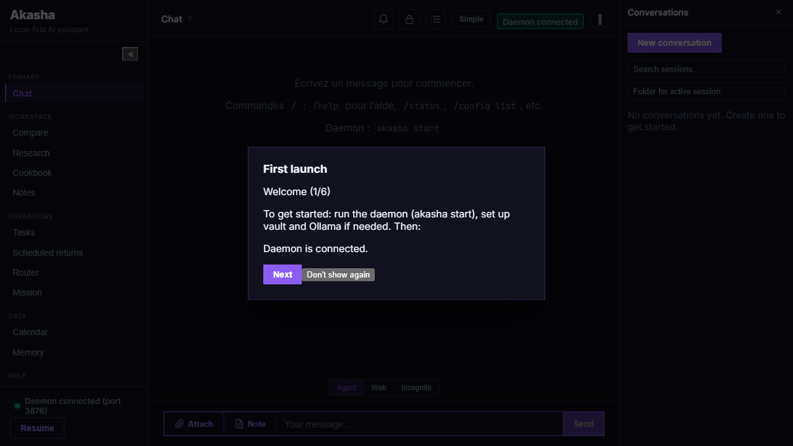
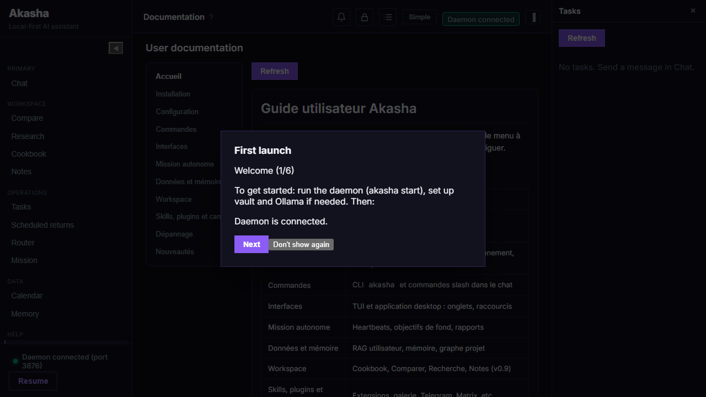

Everything you need to install, configure and extend Akasha.
Introduction
Akasha is a privacy-first personal assistant built around a long-running daemon.
With the embedded model, you get answers without signing up or calling the cloud.
You can add Ollama or OpenAI / OpenRouter when you need larger models — keys stay in your local vault.
Skills extend what the agent can do (calculator, custom workflows, …). Optional channels (Telegram, Slack, Discord) let the same daemon serve multiple interfaces.
💡
Quick start: Jump straight to Installation if you just want to get running.
Key principles
Local-first — data directory on your machine; no mandatory cloud account.
Explicit trust — tool and path access is deny-by-default until you edit policy.
Extensible — skills, plugins, optional channels.
Binary distribution — prebuilt releases on this site; the Akasha engine source is not publicly available.
Interface screenshots
Real captures from the web UI (same React bundle as the desktop app), produced by the Akasha project’s Playwright suite when the daemon is running. Regenerate with npm run test:e2e in apps/akasha-ui (see the engine repository).

Chat

Documentation tab
What's new in v0.8.0
Autonomous mission
Long-running goals — define an objective, context, rules, and roles; the daemon runs heartbeat tasks on a schedule while the mission is active.
autonomous_mission.yaml in the data directory; Mission tab in the desktop app for configuration and activity.
HTTP API — GET / PUT /api/autonomous-mission, POST /api/autonomous-mission/pause and /resume, GET /api/autonomous-mission/events (optional limit, since for the event log).
Chat alignment — use the same session_id as the mission so “no unnecessary questions” behaviour applies to chat as well as heartbeats.
Project knowledge graphs
Multiple workspaces — register several project roots (name + absolute path); each build writes graph.json, GRAPH_REPORT.md, and graph.html under workspace_graph/out/<id>/ in the data directory.
Agent context — relevant graph lines are injected automatically; the workspace_graph_search tool queries indexed symbols/paths (allow it in tools policy if you restrict tools).
Settings → Data → Project graph — manage workspaces, rebuild, open HTML report; improved memory search presentation.
Agent profile & reliability
Formality — optional formal / informal / default tone and address (e.g. vous vs tu in French); stored in agent_profile.json and editable in Settings → Agent profile.
Tools-first mode — when routing requires it, the first tool call is more deterministic; fewer spurious LLM round-trips for light chit-chat.
Cleaner summaries — trailing technical JSON “contract” blocks can be stripped from the user-facing summary when appropriate.
akasha doctor / doctor --fix — improved behaviour for zip / packaged installs and spec/ resolution next to binaries.
Optional power-user CLIs
Built-in prompts may suggest AXI-style CLIs (e.g. gh-axi, chrome-devtools-axi) when installed — optional; Akasha still ships browser tools and run_command as before.
GET /api/plugins — installed plugins, scores, disabled-by-reputation state.
POST /api/plugins/reload — reload plugin manifests without restarting the daemon.
POST /api/plugins/reputation/reset — body {"plugin_id":"<id>"} to reset one plugin, or empty body / omit id to reset all.
GET /api/plugins/routing_rules — optional ?message=… — debug dynamic routing rules.
POST /api/plugins/routing_rules/match — JSON body to test routing match.
Autonomous mission API (v0.8+)
GET / PUT /api/autonomous-mission — read or merge mission state (YAML-backed).
POST /api/autonomous-mission/pause / POST /api/autonomous-mission/resume
GET /api/autonomous-mission/events — optional query limit, since (RFC3339).
Project graph API (v0.8+)
Prefix /api/workspace-graph — list/create/delete workspaces, rebuild, export JSON, Markdown report, HTML view. See the engine docs for paths.
These listen on 127.0.0.1 by default — not exposed to the internet unless you deliberately reverse-proxy. For day-to-day use, the TUI Router tab and akasha router metrics cover most needs; use Plugins to browse the public catalog.
💡
Authentication and exact OpenAPI docs may vary by build; treat this section as a capability overview. If you need a formal API spec for integration, request it via GitHub Issues.
Installation
Requirements
OS: Windows 10+, macOS 11+, or Ubuntu 20.04+
Embedded model by default — no external installation required for core use. Ollama and cloud providers (OpenRouter, OpenAI) are optional; configure them during akasha init if you want to use them.
One-line install
Paste one of these commands in your terminal to download, install, and configure Akasha (daemon auto-start and optional config wizard).
Go to the Releases page on this site or GitHub Releases (Akasha_app) — binaries are published here (public mirror). For a complete install, download akasha-full-<os> (CLI + daemon + TUI + desktop bundle + scripts). Extract to e.g. C:\Akasha or ~/Akasha.
Windows: double-click INSTALL.cmd at the root of the extracted folder to run the installer (no PowerShell execution policy prompt), or run .\scripts\setup.ps1. Linux / macOS: run chmod +x scripts/setup.sh && ./scripts/setup.sh.
You get the akasha (or akasha.exe), akasha-daemon, akasha-tui executables, a docs folder with the user guide, and in the full zip a ui subfolder with the desktop app installer.
Run akasha start from the folder where you extracted the archive so the in-app Doc tab can show the user guide (the daemon serves it from the docs folder in that directory).
First Run
akasha init runs an interactive setup: LLM provider (embedded, Ollama, OpenRouter, OpenAI), vault, optional channels, and optional Docker services (Ollama, TTS/STT, BitNet) if the akasha-models compose directory is found — set AKASHA_MODELS_DIR or use akasha services install --compose-dir … later. Use akasha init --defaults for minimal setup without prompts.
Then start the daemon and open the interface:
akasha start # background daemon (auto-restart on crash)
akasha tui # terminal UI: Chat, Scheduled, Router, Doc, Tasks, Calendar, Memory
If you have the desktop app (Akasha UI), launch it; it connects to the daemon on port 3876 (configurable via AKASHA_PORT).
Commands Reference
Daemon
akasha start # Start daemon (auto-restart)
akasha start --foreground # Run in foreground (logs in terminal)
akasha stop # Stop daemon
Setup & diagnostic
akasha init # Interactive setup
akasha init --defaults # Minimal setup, no prompts
akasha doctor # Check system and daemon
akasha doctor --fix # Create data_dir and minimal config if missing
akasha doctor --advice # Diagnostic advice (daemon must be running)
akasha paths # Show data_dir and config file paths
Vault (secrets)
akasha vault list # List stored keys
akasha vault set KEY [value] # Store a secret
akasha vault get KEY # Show value (use with care)
akasha vault delete KEY # Remove a key
Config & router
akasha config models routes # Models per category
akasha config models set CATEGORY PROVIDER MODEL
akasha config models fetch # Fetch Ollama model info
akasha config models get [CATEGORY] # Show models
akasha config env list # List env vars in akasha.env
akasha config env get KEY / set KEY [value]
akasha config provider list # List providers in llm_router.yaml
akasha config provider set-ollama [--url URL] [--category CAT] [--model MODÈLE]
akasha config provider add-openai [--api-key KEY] [--category CAT] [--model MODÈLE]
akasha config provider add-openrouter [--api-key KEY] [--category CAT] [--model MODÈLE]
akasha router metrics # LLM router metrics
akasha router discover # Discover Ollama instances
akasha router show MODEL # Ollama model info
Plugins
akasha plugin list # List installed plugins
akasha plugin reload # Reload plugins (no daemon restart)
akasha plugin install PATH # Install from directory
akasha plugin uninstall ID # Uninstall by id
akasha plugin catalog # Bundled / local catalog of available plugins
The Plugins page on this site lists the community catalog from the Akasha_plugins repository (always up to date with main). Use akasha plugin install with a local path or follow each plugin’s README.
Docker services (optional)
Requires Docker and the akasha-models compose folder. Set AKASHA_MODELS_DIR to that directory, or pass --compose-dir.
akasha update check # Check for a new version; prints download URL if available
akasha update install # Open the latest release download page in the browser
Configuration
All config files live in the data directory. Run akasha paths to see its path (e.g. C:\Users\…\akasha on Windows, ~/akasha on Linux/macOS).
Main files
llm_router.yaml — LLM providers (Ollama, OpenAI, OpenRouter, embedded) and models per task type.
tools_policy.yaml — Tool permissions: file paths, allowed commands, web search, skill-install hosts (see Tools policy).
akasha.env — Persistent env vars (also editable via akasha config env set).
connectors.env — Telegram, Slack, Discord activation (see Channels).
agent_profile.json — Agent profile: name, role, personality, rules, optional formality (formal / informal). Editable in Settings → Agent profile (web UI) or by editing the file and restarting the daemon.
autonomous_mission.yaml — Optional autonomous mission (objective, heartbeat, report directory). Editable in the Mission tab or via /api/autonomous-mission.
voice_router.yaml — Optional TTS/STT URLs (voice button in the web UI when STT is configured).
LLM router & orchestrator
In llm_router.yaml, task types map categories to provider/model. See LLM router (YAML) for every key and examples. v0.7.0+: optional task_types.orchestrator — when present, the orchestrator uses it for decomposition instead of system.
Quick YAML / env examples
akasha.env (one variable per line; loaded when the daemon starts):
akasha init or akasha doctor --fix creates the data_dir and minimal config files if missing.
LLM router (llm_router.yaml)
Location:data_dir/llm_router.yaml (or project root if missing from data_dir). Used by: daemon, akasha config models …. API keys can be vault://key_name or standard env vars (e.g. OPENAI_API_KEY).
📌
task_types is the main knob: each entry is task_types.<name>: { primary, fallback, constraints? }. The router picks a task type name from classification, system prompts, orchestration, or tool context, then loads the matching route. Define a primary (provider + model) and optional fallback chain for every behaviour you care about.
task_types — keys you can use
YAML accepts any string as a key; the table below lists the names the engine actually resolves. If a name has no entry, defaults / fallbacks apply.
A. Automatic classification (chat — keyword router)
When no explicit override is set, the router classifies the user message into one of these six types:
task_types key
Typical triggers
conversation
Default when nothing more specific matches.
code_generation
Code, implement, debug, script, functions, …
creative_writing
Stories, poems, articles, emails, …
scientific_analysis
Papers, research wording, …
data_analysis
Statistics, charts, “analyze data”, …
system_diagnostic
Diagnostics, health, status, runbooks, …
B. System, orchestration, and image
task_types key
Role
system
Internal “system” LLM work (memory extraction, compaction, summaries, etc.).
orchestrator
Optional (v0.7+): decomposition / planning LLM. If absent, orchestrator falls back to system.
image_generation
Required for the generate_image tool: primary selects the image backend (e.g. OpenAI Images API, Ollama image-capable model). This is separate from the chat text model.
C. Specialist / delegation routes (orchestrator & sub-agents)
When the pipeline assigns a specialist agent, the router looks up a route under that agent’s primary task type (and may fall back to related types if no custom model is set). You can define any of these keys to pin a provider/model per role:
task_types key
Notes
financial
May fall back to data_analysis → conversation if unset.
documentalist
project_manager
technical_writer
May fall back to creative_writing.
research
May fall back to scientific_analysis.
security_audit
May fall back to code_generation, system_diagnostic.
creative
May fall back to creative_writing.
analyst
May fall back to creative_writing.
architect
May fall back to code_generation, system_diagnostic.
frontend, backend, integration
Often aligned with code_generation fallbacks.
database
May fall back to data_analysis / code_generation.
qa
May fall back to system_diagnostic / code_generation.
Delegation aliases: the agent id code resolves to the code_generation route; search resolves to conversation. There is no separate task_types.search key unless you add one yourself.
Autonomous mission (autonomous_mission.yaml) accepts additional heartbeat symbols such as search, code, schedule for heartbeat_preferred_task_type — routing still uses the mappings above (e.g. code → code_generation).
Structure of each task_types.<name>
primary — provider, model, optional config (see below).
fallback — ordered list of { provider, model, config? }.
Use akasha config models set <category> <provider> <model> to update text routes without hand-editing; image routes are often edited under task_types.image_generation.
Vault CLI
Secrets live encrypted under the data directory. Never commit them. The chat can list key names with /vault list but cannot store secrets — use the CLI or HTTP API.
Commands
Command
Description
akasha vault list
Print all stored key names (values are never shown).
akasha vault set KEY [value]
Store or update a secret. If value is omitted, it is read from stdin (safe for multiline tokens).
akasha vault get KEY
Print the value (sensitive — avoid logs and shoulder-surfing).
akasha vault delete KEY
Remove a key.
Examples
# List keys
akasha vault list
# Set from argument (shell history may capture this — prefer stdin for production)
akasha vault set brave_api_key YOUR_BRAVE_KEY
# Set from stdin (PowerShell)
"YOUR_SECRET" | akasha vault set openai_api_key
# Set from stdin (bash — avoids shell history)
printf '%s' "$SECRET" | akasha vault set openrouter_api_key
# Read back (debug only)
akasha vault get brave_api_key
# Remove
akasha vault delete old_key
Common key names
These names match what akasha init / akasha config provider add-openai and llm_router.yaml expect when using vault://… references:
LLM:openai_api_key, openrouter_api_key, azure_openai_api_key (as referenced in your YAML).
Web:brave_api_key (Brave Search; or set BRAVE_API_KEY in the environment).
In llm_router.yaml, reference a vault key as api_key_ref: "vault://openai_api_key". Environment variables such as OPENAI_API_KEY still work if you do not use the vault.
Env files (akasha.env & connectors.env)
Both are plain text: KEY=value per line (spaces around = are tolerated). The daemon loads them when it starts.
data_dir/akasha.env
General daemon and behaviour flags. Edit with akasha config env list, akasha config env get KEY, akasha config env set KEY value, or manually. Examples:
After changing env files, restart the daemon (akasha stop && akasha start).
Optional services (Docker)
Akasha can drive Ollama, BitNet (OpenAI-compatible local server), and voice (TTS + STT) via Docker Compose profiles shipped in the akasha-models layout (same tree as the engine’s akasha-models/docker-compose.yml). The CLI updates llm_router.yaml and voice_router.yaml in your data directory to point at localhost after install.
Requirements
Docker Engine with Docker Compose V2 (docker compose subcommand).
Enough disk space for images and model weights (Ollama pulls; BitNet needs a GGUF in a volume; voice images build Python stacks).
RAM / GPU — Ollama and BitNet benefit from GPU on Linux (optional deploy.resources in compose for NVIDIA); CPU-only works but is slower.
A directory containing docker-compose.yml — set AKASHA_MODELS_DIR to that path, or pass --compose-dir to every akasha services command.
If docker-compose.yml is missing
If the file was deleted or your install did not ship the akasha-models tree, download the same Compose file from this site and save it as docker-compose.yml in an empty folder, then point AKASHA_MODELS_DIR (or --compose-dir) at that folder:
Ollama profile only (--profile ollama): this file is enough; the image is pulled from Docker Hub.
Voice or BitNet: the compose file references ./tts, ./stt, and ./bitnet build contexts. You need the full akasha-models directory from your engine bundle / release (or equivalent) beside the compose file, or those profiles will fail to build.
providers.bitnet.base_url → http://localhost:8080 (populate /models volume with a GGUF)
voice
TTS + STT
8765 (TTS), 8766 (STT)
voice_router.yaml: tts.base_url, stt.base_url
CLI workflow
# Set once: folder that contains docker-compose.yml (akasha-models checkout or copy)
set AKASHA_MODELS_DIR=C:\path\to\akasha-models
# Linux/macOS: export AKASHA_MODELS_DIR=~/src/akasha-models
akasha services install --ollama
akasha services install --voice
akasha services install --bitnet
akasha services install --all
# Or: akasha services install --voice --compose-dir C:\path\to\akasha-models
akasha services status
akasha services stop
# Restart Akasha so it reloads YAML
akasha stop && akasha start
Manual Compose (without the CLI): from that directory, docker compose --profile ollama up -d, --profile voice up -d, --profile bitnet up -d, or combine profiles. See the engine’s akasha-models/README.md for BitNet model download and TTS/STT environment variables (TTS_VOICE, WHISPER_MODEL, etc.).
Interfaces
The TUI (akasha tui) has 7 tabs: Chat, Scheduled (planned returns — agent responses for recurring/scheduled tasks, separate from the main chat), Router (LLM metrics), Doc (user guide), Tasks, Calendar, Memory. Use Tab to switch; R to refresh Router, Scheduled, or task list; F2 to cycle themes. Mission and full Settings are desktop/web only; you can still edit autonomous_mission.yaml or call the HTTP API from the CLI.
The desktop app (Akasha UI, if installed) connects to the same daemon on port 3876 and adds: Settings with Agent profile (including formality — formal / informal / default), Data with User RAG and Project graph (multiple indexed folders, HTML report per workspace), Mission tab for autonomous goals, and attachments in Chat (images, PDFs, text). Use keys 1–9 to switch tabs when focus is not in an input field (Mission = 8, Settings = 9).
Tools policy (tools_policy.yaml)
Location:data_dir/tools_policy.yaml. Semantics: if the file is missing or empty, tool access is deny-by-default (paths and commands blocked until you allow them). akasha doctor --fix creates a starter file.
All keys (reference)
Key
Type
Description
allowed_read_paths
string[]
Path prefixes allowed for read_file, search, etc. Use "." for daemon CWD or absolute paths. Empty = no reads.
allowed_write_paths
string[]
Path prefixes allowed for writes. Empty = no writes.
allowed_commands
string[]
Executable names allowed for run_command. Use ["*"] to allow all, combined with blocked_commands for safety.
blocked_commands
string[]
Deny list; wins over allowed_commands (e.g. block rm when using ["*"]).
command_timeout_secs
integer
Timeout in seconds for each command (e.g. 60).
run_command_default_cwd_workspace
bool
If true, run_command uses the task workspace as cwd when no --cwd is set.
allowed_web_domains
string[]
Domains allowed for web_fetch. ["*"] allows any (minus blocked).
blocked_web_domains
string[]
Blocked domains for web_fetch; takes precedence.
web_search_enabled
bool
Enable Brave Search (web_search). Requires vault brave_api_key or BRAVE_API_KEY.
tool_profiles
map → string[]
Named lists of tool names, e.g. coding: [read_file, write_file, run_command].
default_profile
string
If set, only tools listed in tool_profiles[default_profile] are allowed (plus command/path rules).
allowed_skill_install_hosts
string[]
HTTPS hosts for install_skill. Default behaviour is restrictive (GitHub-oriented); ["*"] allows any host.
require_approval
string[]
Tool names that need explicit user approval before running (e.g. write_file, run_command, device_invoke).
allowed_device_interfaces
string[]
For device_discover / device_invoke: e.g. local_media, system, synthetic_input, usb, network. ["*"] allows all (subject to blocked).
blocked_device_interfaces
string[]
Blocked interfaces; takes precedence.
browser_enabled
bool
Enable Playwright-based browser tools. Requires Node/npm and the Playwright runner (see env AKASHA_PLAYWRIGHT_RUNNER / auto-install).
Brave search: akasha vault set brave_api_key … then set web_search_enabled: true. For vault-injected env on a single command, the agent may use TOOL: run_command VAULT:my_key=ENV_NAME … (see engine docs). Skills that need extra binaries add their commands to allowed_commands automatically on install.
Channels (Telegram, Slack, Discord, Teams)
Optional connectors let the agent respond on external platforms. Store tokens in the vault and set the matching env var to 1. Activation vars are loaded from connectors.env in the data directory (created or updated by akasha init).
Telegram — akasha vault set telegram_bot_token YOUR_TOKEN, then AKASHA_TELEGRAM_ENABLED=1. Message the same bot as the token (check daemon log line bot_username). In private, plain text or /akasha …; in groups, /akasha@BotUsername …. Chat ID for notifications: send a message to @userinfobot, use the numeric id in AKASHA_TELEGRAM_NOTIFY_CHAT_ID. Only one process may poll Telegram per bot token (no second daemon / no webhook elsewhere). Optional startup ping may fail until you have opened the bot chat at least once.
Slack — Vault slack_signing_secret, AKASHA_SLACK_ENABLED=1. Point the Slack slash command to POST /channels/slack/command on your daemon URL.
Discord — akasha vault set discord_bot_token YOUR_TOKEN, then AKASHA_DISCORD_ENABLED=1. Prefix: !akasha <message>.
Microsoft Teams — AKASHA_TEAMS_ENABLED=1 when your Teams integration is configured (see vault / deployment docs for your build).
Environment variables
Persist values in data_dir/akasha.env via akasha config env set KEY value (loaded when the daemon starts). Connector flags often live in connectors.env instead.
Daemon & UI
AKASHA_PORT — HTTP port (default 3876).
AKASHA_DATA_DIR — Config, vault, skills, DB (default %USERPROFILE%\akasha / ~/akasha).
AKASHA_LANG — TUI language: value starting with en → English; else French. Overrides LANG / LC_ALL.
AKASHA_APP_BASE_URL — Site root for api/latest.json (update check). Default: this site’s GitHub Pages URL.
LLM & chat behaviour
AKASHA_MAX_RESPONSE_TOKENS — Max tokens per chat completion (default 4096).
AKASHA_MAX_CONTEXT_TOKENS — Token budget before short-term history compaction (default 8192).
AKASHA_SYSTEM_TASK_MAX_TOKENS — Max tokens for system tasks (summaries, extraction). Default 4096; raise to 8192 if “thinking” models return empty outputs.
AKASHA_LLM_TIMEOUT_SECS — Total LLM call timeout (default 300). First load of the embedded model can be slow—increase if needed.
AKASHA_LLM_STREAM_IDLE_SECS — Max gap between stream chunks (default 60).
AKASHA_LLM_FIRST_CHUNK_SECS — Max wait for the first chunk (embedded model load); defaults to min(300, AKASHA_LLM_TIMEOUT_SECS).
AKASHA_MAX_TOOL_ROUNDS — Agent tool loop iterations per reply (default 10).
AKASHA_EMBEDDED_MODEL — Embedded backend id (e.g. qwen3_0_6b; build-dependent).
OLLAMA_HOST — Ollama base URL (default http://localhost:11434) if not in llm_router.yaml.
AKASHA_VAULT_MASTER_KEY — Master key for file-based vault (if used).
💡
Windows PowerShell:$env:AKASHA_TELEGRAM_ENABLED="1" · CMD:set AKASHA_TELEGRAM_ENABLED=1
Troubleshooting
Doc tab is empty — Start the daemon from the folder where you extracted the archive (the one that contains the docs folder).
Empty responses with a “thinking” model — Some cloud models return empty content for system tasks. Increase AKASHA_SYSTEM_TASK_MAX_TOKENS (e.g. akasha config env set AKASHA_SYSTEM_TASK_MAX_TOKENS 8192) and restart the daemon.
Daemon won’t start — Run akasha doctor and akasha doctor --fix to create missing data_dir and config files.
No responses or timeouts — First load of the embedded model can take several minutes (download + CPU). Increase AKASHA_LLM_TIMEOUT_SECS / AKASHA_LLM_FIRST_CHUNK_SECS if needed. Check akasha doctor or /embedded. Point HF_HOME to a disk with enough space for model cache.
Ollama / cloud — Ensure Ollama is running or API keys are in the vault; akasha config models routes and the Router tab show active models.
Download link 404 on GitHub — Binaries are mirrored to Akasha_app releases after each upstream release. If a version has notes but no zip files yet, wait for the Update Release Notes workflow to finish or open an issue.
Using Skills
Ask the agent in chat to install a skill from a URL, e.g. « Install the calculator skill from https://github.com/azerothl/Akasha_skills/tree/main/skills/calculator ». The agent will download it and reload skills.
To allow other hosts (GitLab, custom HTTPS), edit tools_policy.yaml in the data_dir and set allowed_skill_install_hosts (e.g. ["*"] for any HTTPS).
If you add or change skill files manually in the data_dir, type /skills reload in the chat to reload without restarting the daemon.
💡
Browse the Skills Library for install URLs and descriptions.
Creating your own skill
If you want to create a skill for your own use (e.g. hosted elsewhere or only in your data_dir), the daemon only needs a valid SKILL.md. The format below is what Akasha expects so the agent can discover and use your skill.
Required file: SKILL.md
Filename:SKILL.md (uppercase).
Frontmatter (YAML between ---): Required: name (identifier, e.g. my-skill), description (short text: when the agent should use this skill; used for routing). Optional: license, compatibility, metadata (e.g. version: "1.0").
Body: Markdown with instructions for the agent (when to use the skill, which tools to call, guidelines, examples). See the Agent Skills specification.
skill.json (for the gallery / catalog)
If you publish the skill in the Skills Library or another tool that reads the catalog, add a skill.json with: id, name, version, description, author, category, tags, icon (e.g. Lucide name), featured, install_url, install_command.
For a user-only skill (files in data_dir/skills/ or install via URL without listing in the gallery), only SKILL.md is required; the daemon does not need skill.json.
Optional directory structure
references/ (extra docs), scripts/, assets/ — see What are skills?. When installing from GitHub, the daemon can fetch the repo tree; for other hosts, only the file at the install URL (usually SKILL.md) is downloaded.
Installing your skill
Via agent: Ask in chat, e.g. “Install the skill from https://…” The URL must point to a raw SKILL.md or a path where SKILL.md is available.
Manual: Copy your skill folder into data_dir/skills/<name>/, then type /skills reload in chat. For non-GitHub hosts, set allowed_skill_install_hosts in tools_policy.yaml (see Configuration).
Minimal SKILL.md example
---
name: my-skill
description: Use when the user wants to do X. Do Y and Z.
---
# My Skill
When the user asks for X, use the tools A and B. Return the result in format …
Slash commands (in chat)
In Chat (TUI or web), lines starting with / are commands (not sent to the LLM). /help or /? prints the authoritative list for your build. Reference below:
Command
Description
/help, /?
List all slash commands.
/task create "message"
Create a task (same as sending that message to the agent).
/schedule create NAME INTERVAL_SEC "description"
Recurring schedule (interval in seconds).
/schedule delete SCHEDULE_ID
Remove a schedule.
/stop TASK_ID, /cancel TASK_ID
Cancel a running or queued task.
/newsession
New session: clear short-term chat context.
/status
Daemon status.
/doctor
Health checks (Ollama, vault, embedded model, etc.).
/advice
Diagnostic help using RAG + LLM (daemon must be up).
/embedded
Embedded local model status (loaded or not).
/embedded reload
Unload embedded weights; next request reloads.
/metrics
LLM router metrics.
/models
All models from configured providers.
/models list
Primary + fallback model per category.
/models set CATEGORY PROVIDER MODEL
Set category model (e.g. /models set conversation ollama llama3.2); previous primary becomes fallback; saved to llm_router.yaml.
/routes
Same routing view as /models list.
/config list
Keys in akasha.env.
/config get KEY
Show one env value.
/config set KEY value
Set persistent env (restart may be needed).
/vault list
Vault key names only (no values).
/plugins
Installed plugins.
/reload
Reload plugins without daemon restart.
/skills, /skills list
Installed skills (name + description).
/skills reload
Rescan skill folders after add/edit.
/skills uninstall <name>
Remove a skill by id.
/restart
Restart daemon (when using the supervisor).
Vault: add or delete secrets only via CLI — akasha vault set KEY [value], akasha vault delete KEY — or API DELETE /api/vault with body {"key":"…"}. No slash command writes vault values.
Update API
Akasha checks the following endpoint on startup (if auto-update is enabled):
GET https://azerothl.github.io/Akasha_app/api/latest.json
Akasha uses semantic versioning (semver). An update is triggered when version in the response is greater than the installed version.
Run akasha update check to see if a newer version is available; the command prints the download link.
Community
This showcase site and its releases are hosted in the Akasha_app repository. You can report issues, suggest improvements, or contribute to the site there.